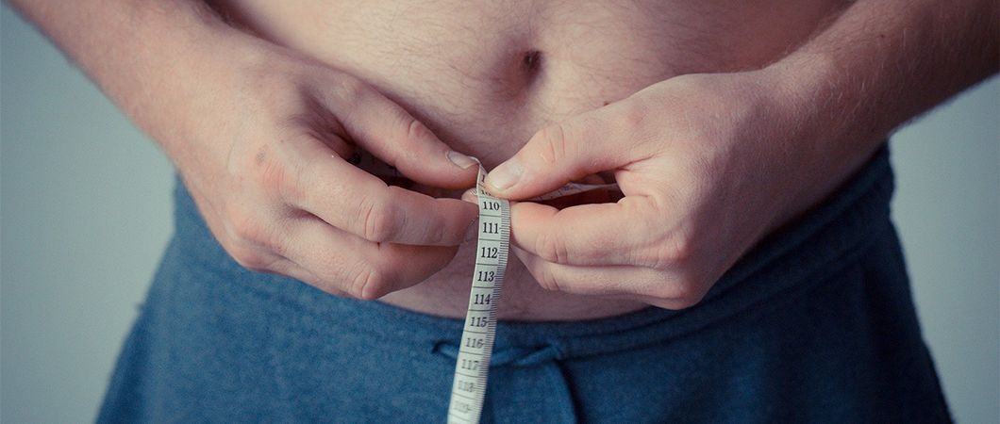
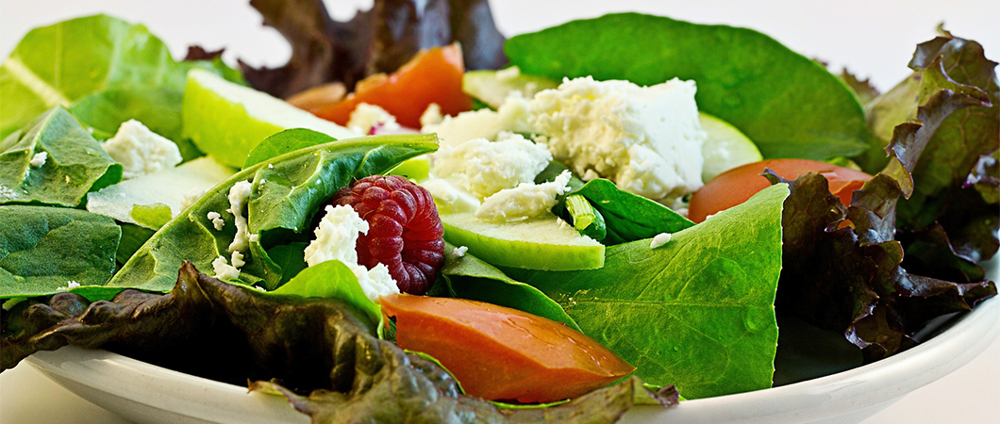

Weight Loss Surgery in Turkey
Weight loss surgeries are performed to help people who have obesity to lose weight by reducing the amount of calories entering their bodies
Weight Loss Surgery in Turkey
Bariatric surgery or weight loss surgery in Turkey has developed significantly in the last decade, as Turkey has managed to establish an unrivalled reputation as a destination for bariatric surgical operations thanks to its experienced surgeons, affordable prices, and the developed infrastructure of the Turkish health care system.
Bariatric procedures in their essence are surgical procedures that aim to reduce the amount of calories and nutrients entering the body in one way or another.
Bariatric surgery (weight loss surgery) is considered an appropriate option for weight loss in people who are obese, and at the same time have failed traditional methods of weight loss such as diet and exercise.
Table of content
- What makes a good candidate for weight loss surgery in Turkey?
- Types of Weight-Loss Surgeries in Turkey
- Which Weight-Loss Surgery Is Best?
- What are the Benefits of Weight Losing Surgery?
- What complications can occur with weight loss surgery?
- Do I have to follow a strict diet after a weight loss surgery?

What makes a good candidate for weight loss surgery in Turkey?
Doctors and dietitians experts use a measurement called Body Mass Index (BMI), and this measurement is used to determinate the normal weight of a person with respect to their height.
BMI is basically used a screening and diagnostic tool to show whether a person is overweight or underweight, at the same time bariatric surgeons use BMI to determine the eligibility of a person for weight loss surgery along with other factors.
must be considered as a last resort after the failure of all nonsurgical methods to manage weight, but in general, people who fit the criteria below qualify for weight loss surgery
- Patients with a body mass index (BMI) higher than 40 kg/m2 who failed nonsurgical treatment
- BMI ≥ 35 kg/m2 and at least one or more obesity-related health conditions, such as diabetes, hypertension, sleep apnea, or fatty liver.
- BMI ≥ 30 kg/m2, in some cases and according to the dietitian and doctor judgments
Types of Weight-Loss Surgeries in Turkey
You must have heard of several types of surgical operations to treat obesity. Ilajak Medical in Turkey offers weight loss surgery with the latest techniques and equipment
Gastric Bypass
In gastric bypass surgery, the surgeon closes most of the stomach leaving a small pouch, and connects that small pouch to the middle of small intestine, allowing food to pass directly from the stomach to the small intestine bypassing a large part of the stomach and most of the first half of the small intestine.
Gastric Sleeve
Gastric sleeve also known as sleeve gastrectomy, is a surgical process in which the stomach is reduced into a sleeve-like thin tube, by doing that the surgeon isolates and closes most of the stomach, leaving only a small part of the stomach.
Stomach Balloon
Stomach balloon also known as gastric balloon is a special balloon filled with liquid material. This balloon is placed into the stomach using endoscopy which is a thin tube that passes through mouth and esophagus to reach the stomach and leave the balloon there.
The balloon settles in the stomach for about 6 months, reducing the size of the stomach available for food, and this limits the amount of food you can eat before feeling full.


How is weight loss surgical procedures done?
Gastric bypass and gastric sleeve operations are performed using open or laparoscopic surgical techniques.
As for gastric balloon, it is not considered an operation in the true sense, but rather a nonsurgical medical procedure that is performed using an endoscope, as it does not include opening the skin, as in the gastric bypass or gastric sleeve.
Which Weight-Loss Surgery Is Best?
Each type of weight loss surgeries differs from the other, as each one of them has its advantages and disadvantages, let’s give you some details in a nutshell below
Gastric Bypass
Compared to the other procedures gastric bypass provide a greater overall weight loss, and its effect starts to appear immediately after the procedure, but it is a major surgery that has its risks, as it may cause health problems through poor absorption of nutrients by the body, and thus may lead to malnutrition, therefore, it is imperative to monitor the levels of nutrients such as vitamins and minerals in your diet permanently after the operation, and it’s also important to maintain the balance of the diet and take some supplements lifelong after you had gastric bypass procedure done.
Gastric Sleeve
Many surgeons and experts consider Gastric sleeve safer and less risky than gastric bypass, as the procedure does not include bypassing important parts of the digestive canal, or cutting and connecting bowel and stomach and it involves a less of change to the gastrointestinal tract anatomy in general, and for this reason gastric sleeve procedure is less likely to cause problems like malnutrition. Some experts consider gastric sleeve even safer than stomach balloon, as it does not include foreign plastic bodies that settle in the body for long periods of time.
Intragastric Balloon
Intragastric balloon popularity has increased in the last few years as a weight loss procedure because of its safety and simple placement inside the stomach, but this procedure does not lead to the same weight loss we expect to find with other surgical procedures like gastric bypass and gastric sleeve.
The decision to choose one type of weight loss procedures in Turkey over another is up to the physician in consultation with the patient, but before you decide to have one of those weight loss procedures done, we must ask the following questions:
- What weight do I expect to lose after the surgery?
- How long will it take before the actual effects of the procedure can be seen?
- What are the risks associated with each of these procedures?
- Will I have to change my diet and nutritional lifestyle if I choose to have one type of weight loss procedure done over the other?
What are the Benefits of Weight Losing Surgery?
Besides losing weight, weight loss surgeries will help you get rid of some health problems associated with obesity, such as
- Diabetes.
- Hypertension.
- High cholesterol level.
- Sleep apnea and snoring.
What complications can occur with weight loss surgery?
- The type of operation scheduled.
- The surgical technique used to perform the operation
- The patient's age and general health status.
- The surgeon's experience
Weight loss surgery possible risks and complications
Some health risks and complications that may occur with weight loss surgeries include:
- Bleeding during the operation
- Inflammation of the surgical wound
- Intestinal anastomosis leaks
- Intestinal obstruction or perforation
- Heart and lung problems
- Gallbladder stones
- Malabsorption
- Severe diarrhea
Do I have to follow a strict diet after a weight loss surgery?
After the operation, it is necessary to follow the instructions of your surgeon and diet expert, who determine the appropriate nutritional lifestyle for your condition.
Commitment to healthy foods helps in the procedure's success, for example: Eating foods rich in protein, and with low fat and calories, and avoiding drinks rich in sugar and calories, all these increase the chance of losing weight, and getting the best results expected from the procedure.
After performing the operation, it is necessary to avoid some foods and take nutritional supplements that contain vitamins and minerals, especially after gastric bypassprocedure, because it changes your gut anatomy and affects the body’s absorptive capacity for some nutrients.
Contact us in Ilajak Medical, to get free consultation and find out which surgery is the best for you.

Do you have an inquiry? Contact us - For FREE Consultation.
Ilajak Medical© | A passion for care!

Intragastric Balloon
An intragastric balloon or stomach balloon is one of the revolutionary ideas in the field of bariatrics and weight loss surgery. The gastric balloon is a light silicone balloon that helps you to limit the amount of food you eat by making you feel full faster.
Read more..
Gastric Bypass Surgery
Gastric bypass is one of weight loss surgical procedures that helps you lose weight surgically by changing the anatomy of your stomach and intestine
Read more..
Gastric Sleeve in Turkey
Bariatric surgery is considered one of the most effective solutions for dealing with severe obesity and its complications, and perhaps the most important of these operations is a laparoscopic gastric sleeve.
Read more..
Liposuction
The liposuction procedure is primarily a cosmetic surgical procedure, done to remove excess fat from areas of the body in which fat is difficult to get rid of by exercise and diet.
Read more..
Stomach Botox Injections
Stomach Botox has recently emerged as one of the procedures that provide a solution for the obesity problem. Stomach or gastric Botox injection is an endoscopic non-surgical procedure in which the stomach wall is injected from the inside with Botox.
Read more..